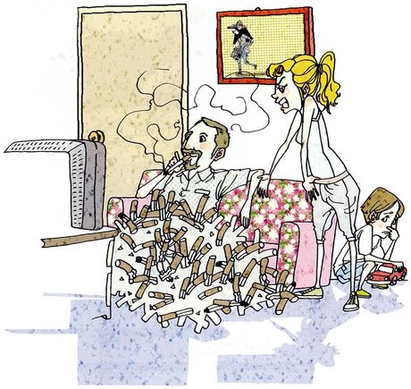
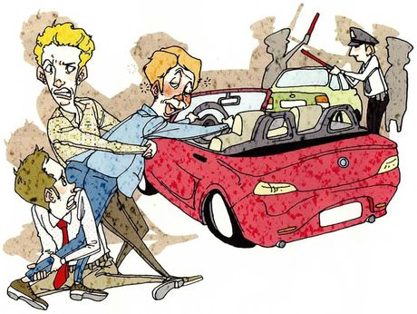
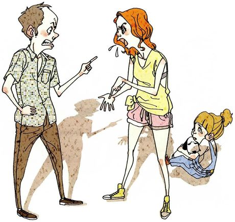
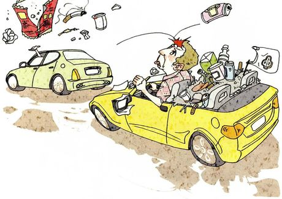
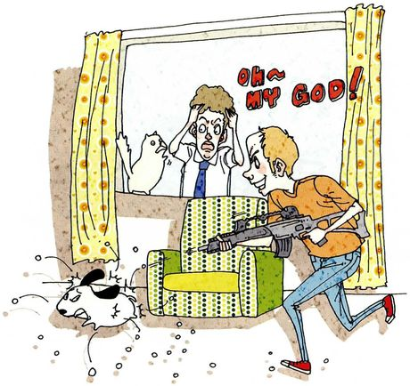
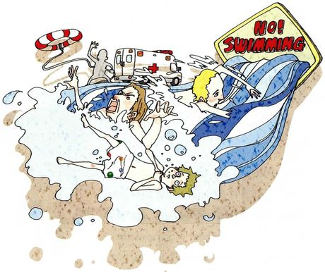

上一课问「发生了什么」，这一课问「哪里不对」 —— 六张图里都有人在违规、伤害别人或做危险的事。所以答题要加一层：判断。这一层的难点不是词汇，是说法：直接说 He is wrong 太生硬，英语里更常用 He shouldn't be doing that 或 I don't think that's acceptable。 另外这一课有两个需要小心处理的题：第 3 题问「该不该在孩子面前吵架」，第 6 题直接给了一个不准确的断言（The best swimmers are the most likely to drown）—— 后者值得礼貌地纠正，而不是照单全收。
指出问题 — 描述 + 一句判断He's smoking in a room with a child in it, and there's ash all over the sofa. He shouldn't be doing that.
联系自己 — 承认或否认，别装完人I don't smoke, but I'm not going to pretend I've never done anything careless.
表态 — 给理由，最好再加一句让步I'd fine him, honestly. Though I'd accept that fines mostly punish the poor.
「哪里不对」有四种说法，按强度排。 ① 最轻：That's not a great idea. ② 中性：He shouldn't be doing that. ③ 明确：That's not acceptable / that's dangerous. ④ 最重：That's illegal.（只用于真违法的事）
第④种要慎用 —— 图里大部分行为只是没礼貌或危险，不是违法。说重了显得武断。
02判断的三层依据 + 三个必须小心的句型
这一课的语法不难，难在分寸：判断别人做错了，同时不显得说教；被问到自己的时候，诚实但不必自曝。
A · 判断的三层依据，越往下越有说服力
层次
依据
怎么说
第一层：规则
违法、违规、有明文规定
It's illegal to drive after drinking. / The sign says no swimming.
第二层：伤害
影响到了别人，尤其弱者
There's a child in the room, so it's not only his choice. / Secondhand smoke affects everyone in the car.
第三层：常识
没有明文规定，但明显不明智
Throwing rubbish out of a moving car is just careless. / Arguing in front of a child doesn't achieve anything.
第 4 题第三问是 What would you do if you saw them on the road? —— 又是虚拟语气。而且它问的是一个真实的两难：想管，但管了有风险。
选项
英语怎么说
优缺点
不管
I'd probably do nothing — it's not worth a confrontation.
诚实，但显得冷漠
记车牌
I'd note the number plate and report it.
理性、安全，最推荐
当面说
I'd flash my lights, but I wouldn't get out of the car.
有风险，要说明为什么克制
回答「你会怎么做」时，最好同时说「我不会做什么」。I'd report it, but I wouldn't confront them at the lights.
—— 这句承认了风险，比一句「我会制止他」成熟得多。
英语里「有分寸的勇气」比「无条件的正义感」更受认可，尤其在涉及陌生人冲突的话题上。
C · 第 6 题的断言不准确，怎么礼貌地纠正
课本写 The best swimmers are the most likely to drown. 这句话作为普遍结论是站不住的 —— 溺水更多发生在不会游泳的人身上。但它背后有个真实的现象：水性好的人更容易低估风险。
不要
直接说 That's wrong.（太硬，而且没解释）
可以
I'd question that a little. Most drownings involve people who can't swim — but I can see what the claim is getting at: confident swimmers take bigger risks, and rip currents don't care how good you are.
为什么这样好
先纠正事实，再承认对方想说的是什么。这比单纯反驳有建设性得多。
这个动作在 Part IV 会反复用到：I'd question that, but I see what it's getting at.
它同时完成三件事：不附和错误的说法、不因此否定题目的意图、给出更准确的版本。
后面几课还有几个类似带着预设的题目，都可以用这一句顶上。
03六个场景：哪里不对，你会怎么做
每张卡三段：What is wrong 把问题说清（含受影响的那个人），What it asks you 说清后面几问要什么，Say it like this 给三档完整答案：① 指出问题 / ② 加你的经历或立场 / ③ 再加理由和让步。
01

Smoking indoors
What is wrongA man is smoking on a sofa, and the sofa and floor around him are covered with cigarette butts — dozens of them. His wife is standing over him looking furious, and a small child is sitting on the floor nearby, watching. He's not just smoking; he's doing it in a room with a child in it, and he's made a mess of the whole living room.
What it asks you三问：他哪里做错了 → 你抽烟吗、想过对不抽烟的人的影响吗 → 烟民说自己「爱国」因为多交税，你同意吗（要解释）。
Say it like this①He's smoking indoors with a child in the room, and he's left cigarette ends all over the sofa. He shouldn't be doing that. ②He's smoking where a child has to breathe it, and the mess shows he isn't even trying to be careful. I don't smoke, and I do notice it when someone does — I'll move rather than say anything. ③The problem isn't the smoking itself — it's that two other people have to share the air and neither of them chose it. As for the "patriotic" argument: the tax revenue is real, but the health costs are also paid publicly, and you can't call something patriotic when the cost lands on the people sitting next to you. I'd accept the point about tax and still say he's wrong, which I realise is a slightly uncomfortable position.
02

Drunk driving
What is wrongA man in a blue jacket, red-faced and clearly drunk, is leaning into a red convertible, trying to get to the driver's seat. Two friends are holding him back — one has him round the waist, the other is crouched on the ground gripping his leg. In the background a police officer is standing by another car.
What it asks you三问：他哪里做错了 → 你酒驾过或坐过酒驾的车吗、当时什么感觉 → 你觉得对酒驾应该怎么处罚。第二问需要谨慎处理。
Say it like this①He's drunk and he's trying to get into his car to drive. His friends are physically holding him back. ②He can barely stand, and he's still reaching for the driver's seat — his two friends are doing the right thing by stopping him. I've never driven after drinking, and I've never got into a car with someone who had, mostly out of luck rather than principle. ③The interesting thing in the picture is the friends: one is pulling him by the waist and the other is literally hanging on to his leg. That's what it usually takes, because a drunk person is the last one who'll agree they're drunk. I've been lucky never to be in that situation. On punishment, I'd say losing the licence should be immediate and long, and prison if anyone was hurt. Though I'm less sure fines work, since they mean very different things to different incomes.
03

Arguing in front of a child
What is wrongA man and a woman are facing each other, both shouting — he's pointing at her, she's gesturing with both hands, and her mouth is wide open. Behind them, a little girl is sitting on the floor with her arms wrapped around her knees, watching. Nobody is paying attention to her.
What it asks you三问：他们哪里做错了 → 你会和伴侣或父母吵吗、吵什么、后来怎么和好 → 为什么在别人面前吵架是错的，尤其是当孩子在旁边。
Say it like this①They're shouting at each other with a child sitting right there, and neither of them is looking at her. ②They're having a full argument in front of their daughter, who's just sitting on the floor. I do argue with my parents — mostly about whether I'm eating properly — and we make up by not mentioning it again, which isn't really making up. ③The argument itself isn't the problem; every couple has them. The problem is that the child is in the room and has to watch two people she depends on become frightening. I argue with my parents about small things and we never resolve them properly — we just stop. On whether it's wrong in front of children: I'd say it isn't the shouting, it's the not explaining afterwards. A child who sees a fight and then sees it repaired learns something. One who only sees the fight learns to be careful.
04

Throwing rubbish out of a car
What is wrongRubbish is flying out of the window of the green car in front — a crisp packet, a cigarette end, a cup, scraps of paper. Behind it, the driver of a yellow convertible has just been hit on the head by a can and has a red mark to show for it. His own back seat is piled high with rubbish too, and paper is blowing out of his car.
What it asks you三问：他们哪里做错了 → 为什么危险 → 如果你在路上看到会怎么做。注意是 they —— 两辆车都有问题。第三问是虚拟语气。
Say it like this①They're throwing rubbish out of their cars onto the road, and a can has just hit the driver behind on the head. ②The green car is emptying its rubbish out of the window, and it's hitting the yellow car behind — the driver has a red mark on his head. It's dangerous because something like that can make a driver swerve, and it's rude because somebody else has to clear it up. ③Both drivers are at it — the green car is throwing things out and the yellow one is full of rubbish and losing paper as it goes. At speed a can is a projectile, and the picture shows exactly what happens. If I saw it, I'd note the number plate and report it rather than confront anyone at the lights, because someone already behaving badly isn't someone I want a conversation with. I'd accept that's less satisfying than saying something, but I'd rather be useful than brave.
05

Shooting at a pet
What is wrongA man in an orange shirt is crouched behind an armchair, grinning and firing a gun at a dog. Pellets are bouncing all around the dog, which looks terrified. At the window, a man in a tie has both hands on his head, and Oh my God! is written above him. A white cat on the windowsill has its fur standing up.
What it asks you三问：他哪里做错了 → 你养宠物吗、为什么 → 养宠物有哪些责任。这题涉及虐待动物，答的时候要稳重，不要开玩笑。
Say it like this①He's shooting at a dog in his living room — it looks like an air gun, but the dog is clearly terrified. That's cruel. ②He's treating the dog as target practice and he seems to think it's funny. Whatever kind of gun it is, the animal can't get away and doesn't understand what's happening. I don't have a pet, partly because of the responsibility and partly because I move too often. ③The detail that bothers me is the grin — he thinks it's a game, and the dog has no way to leave the room. I don't have a pet, and this picture is part of the reason: you're responsible for another life for fifteen years, and the animal can't tell you when you're getting it wrong. The responsibilities are food, money, vet bills and time, but the real one is temperament — you can't opt out on a bad week, and the animal shouldn't pay for your mood.
06

Swimming where it's prohibited
What is wrongThree people are in difficulty in the water, splashing and going under, right beside a large yellow sign reading NO SWIMMING. A life ring is floating unused to one side, and an ambulance is parked nearby.
What it asks you三问：他们哪里做错了 → 你会游泳吗、游得好吗 → 「游得最好的人最容易溺水」，你知道为什么吗。第三个是个断言，需要回应。
Say it like this①They're in the water right next to a No Swimming sign, and at least two of them are struggling. The sign is there for a reason. ②They've ignored a clear sign and now they're in trouble. I can swim, reasonably well — I learned as a child, though I'm not confident in open water. ③They're swimming beside a prohibition sign, and two of them are already going under. I'd question the claim that the best swimmers drown most often — most drownings involve people who can't swim. But I can see what it's getting at: confidence is the risk factor, not skill. Strong swimmers go out further, and a rip current doesn't care how good you are. So the honest version is that ability protects you up to a point and then starts encouraging you, and the people in this picture clearly got to the second part.
05重点词汇（美式音标）
这一课的词都集中在「评价行为」和「讲后果」上。课首页没有脚注，下面按功能分组。
A · 评价行为的词
词
音标
课上怎么用
中文
acceptable
/əkˈseptəbl/
That's not acceptable. 能不能接受。评价行为最中性的说法
可接受的
careless
/ˈkerləs/
Throwing rubbish out is careless. 粗心、不管后果。比 bad 具体
不小心的
illegal
/ɪˈliːɡl/
It's illegal to drive after drinking. 违法。只用于真的违法的事
违法的
rude
/ruːd/
It's rude to the people behind you. 没礼貌。比 impolite 直接
无礼的
selfish
/ˈselfɪʃ/
It's selfish, not criminal. 自私。评价第 1 题最好用
自私的
irresponsible
/ˌɪrɪˈspɑːnsəbl/
That's irresponsible when there are other people on the road. 不负责任。比 careless 重
不负责任的
get away with
/ɡet əˈweɪ wɪð/
He can't get away with that. 做了坏事没被追究
逃脱（惩罚）
B · 讲后果与受影响的人
表达
音标
课上怎么用
中文
affect
/əˈfekt/
How it affects nonsmokers 及物动词，直接影响。名词是 effect
影响
secondhand smoke
/ˌsekəndˈhænd smoʊk/
Everyone in the car breathes secondhand smoke.
二手烟
put at risk
/pʊt æt rɪsk/
He put everyone on the road at risk. 使……处于危险中。正式但有力
使陷于危险
clear up
/klɪr ʌp/
Someone else has to clear it up.
清理
swerve
/swɜːrv/
A can could hit a windscreen and make a driver swerve. 突然转向（躲避）
急转弯
go under
/ɡoʊ ˈʌndər/
Two of them are already going under. 沉下去。描述溺水时用
沉没
no way to
/noʊ weɪ tuː/
The dog has no way to leave the room. 无从……。强调弱者没有选择
没有办法
C · 表达立场和分寸
表达
音标
用法
中文
I'd question that
/aɪd ˈkwestʃən ðæt/
I'd question that a little. 温和地不认同某个说法
我会质疑
what it's getting at
/wʌt ɪts ˈɡetɪŋ æt/
I see what it's getting at. 我明白它想说什么
它想说什么
I'd accept that
/aɪd əkˈsept ðæt/
I'd accept that point. 我承认这个说法 —— 让步专用
我承认
I'm less sure
/aɪm les ʃʊr/
I'm less sure fines work. 我不太确定
我不太确定
rather than
/ˈræðər ðæn/
Report it rather than confront him. 而不是
而不是
I'd rather be… than…
/aɪd ˈræðər/
I'd rather be useful than brave. 宁可……也不……
宁可
06老师大概率会问的问题
这一课的话题都比较严肃，老师多半会挑一两个问你「你自己会不会这样」。答得诚实比答得正确更重要。
Which of these six would you actually speak up about?
Probably only the drunk driving one, and even then I'm not certain. If it were a stranger I'd call the police rather than try to take his keys myself. The smoking one I'd say something about if it were a friend in my own flat, and nothing at all if it were a stranger's house. So the pattern is that I'll say something to people I know and almost nothing to people I don't — which is normal, and also a bit convenient.
先给一个诚实的界限（只对熟人说），再自己指出这个界限「很方便」（a bit convenient）。这种自我拆穿比任何道德表态都可信。
Is it ever right to ignore a No Swimming sign?
Almost never on a marked beach — the signs are usually put where there's a current, and the current isn't visible from the sand. The exception I'd allow is a local who knows the water and knows why that particular sign is there. But the people in a picture are never locals, and neither am I, so for me the answer is no.
给出一个「例外」，但立刻说明「这个例外不适用于我」。承认规则有例外却不给自己开后门，分寸刚好。
Is the fine the right punishment for most of these?
For some. A fine works when it makes the behaviour expensive, and it fails when the person simply can't pay or doesn't care. Losing a licence is more effective than a fine for drunk driving because it takes away the thing that caused the danger. And for throwing rubbish out of a car, honestly, a fine is probably the only practical tool — it's too minor for anything else and it still costs you something.
按「罚款对什么有效、对什么无效」分类，而不是笼统说「罚款不够」。it takes away the thing that caused the danger 是很清楚的论证。
Do you think people behave worse when nobody's watching?
Partly, but I'd say the bigger variable is whether they'll see the person again. The man throwing rubbish out of his car isn't hidden — he just doesn't expect to meet anyone who'll remember. Reputation does most of the work that law does, and it stops working as soon as a place gets anonymous enough.
把「有没有人看」换成「会不会再见到这个人」，这个改写让观察更准确。reputation does most of the work that law does 是可以背走的句子。
What would you say to the child in the third picture?
Nothing clever. I'd say the argument isn't about her, because that's what children assume — that they caused it. That's the one thing an adult can actually do in that situation: make it clear it's between the two of them. Everything else is beyond anyone's control.
不追求「聪明的话」，而是给出一件成年人真能做到的事。这种克制本身就是很好的人格展示。
Is there anything in these pictures you've done yourself?
Thrown something out of a car window, once, when I was a teenager — a ticket stub, I think. I remember it because my father made me stop and pick it up, which was more effective than any lecture. And arguing in front of someone who shouldn't have had to watch: probably, though I'd rather not name which occasion.
承认一件小事（票根），用具体细节让它真实，最后一句留白（I'd rather not name which occasion）也是分寸。
07这节课最容易犯的错
这一课的错误集中在判断的表达 —— 说得太重像指责，说得太轻像纵容。
✗He is very wrong. ✓He shouldn't be doing that. / That's not acceptable.
「他很错」是中式表达。英语评价行为用 shouldn't be doing 或 not acceptable，不用 wrong 加 very。
✗He is illegal. ✓What he's doing is illegal. / He's breaking the law.
illegal 形容行为，不形容人。说 He is illegal 是错的，应该说 what he's doing is illegal。
✗What would you do if you see them on the road? ✓What would you do if you saw them on the road?
虚拟语气里 if 从句用过去时（saw），主句用 would + 原形。第 4 题就是这个结构。
✗I would reported it. ✓I would report it.
would 后面永远接原形，不是过去式。和第 24 课同一个错误。
✗The smoke will affect to the children. ✓The smoke will affect the children.
affect 是及物动词，直接接宾语，不加 to。
✗He should not smoke in front of the child, it is very danger. ✓He shouldn't smoke in front of the child — it's dangerous.
danger 是名词，形容词是 dangerous。而且两个句子之间不能只用逗号连接。
✗I am agree with this opinion. ✓I agree with that. / I'd agree with that.
agree 是动词，前面不加 am。这是中国学生最高频的错误之一，本课第 1 题第三问会用到。
✗The best swimmers are easy to drown. ✓The best swimmers are the ones most likely to drown. / It's easier to get into trouble if you're confident.
drown 是动词，不能说 easy to drown（那意思变成「很容易被淹」）。要用 likely to drown 或 get into trouble。